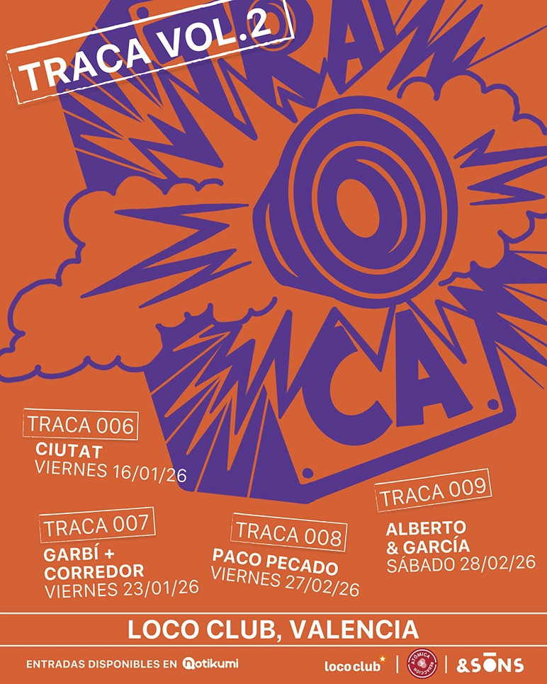
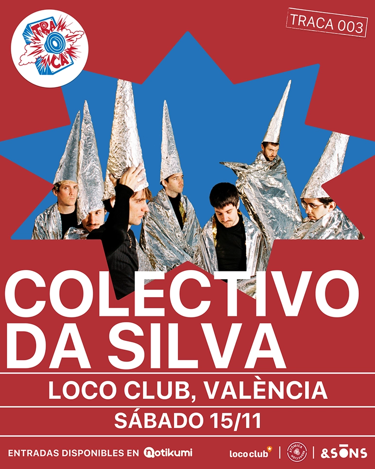
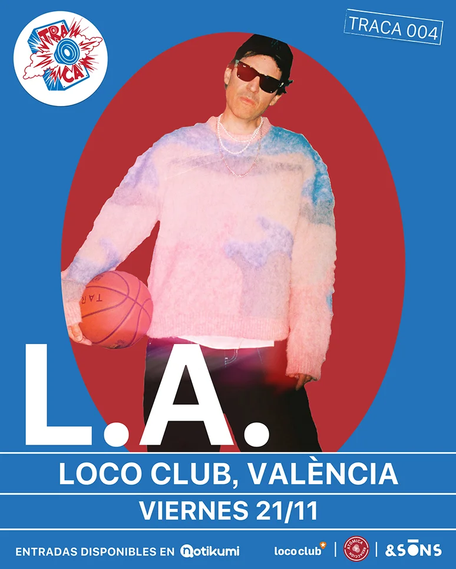
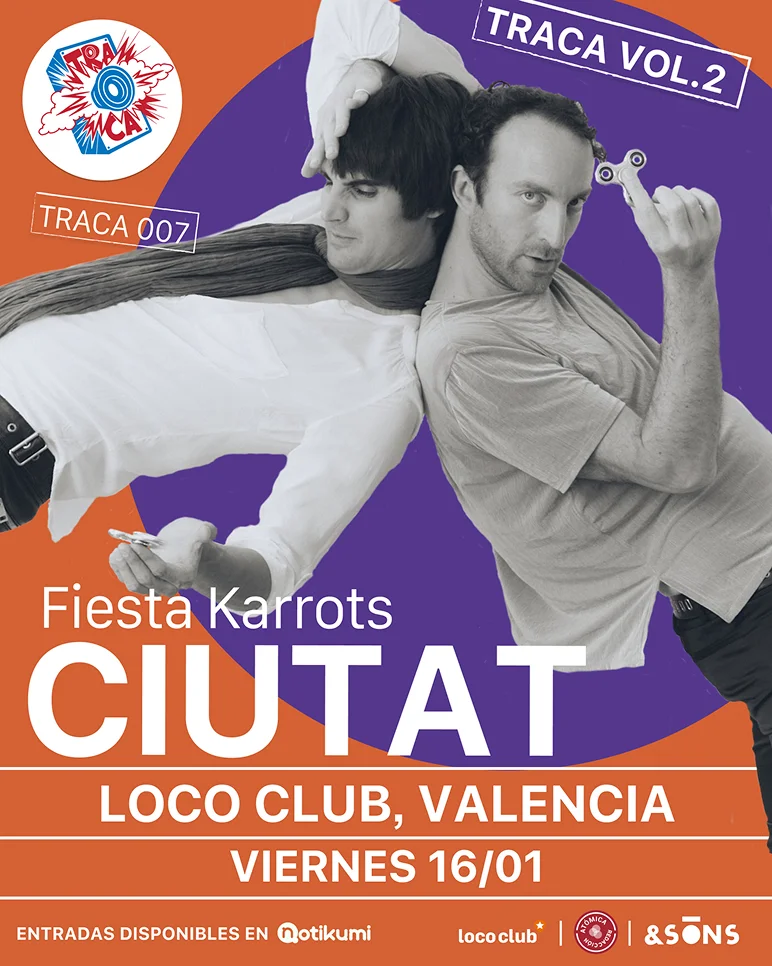
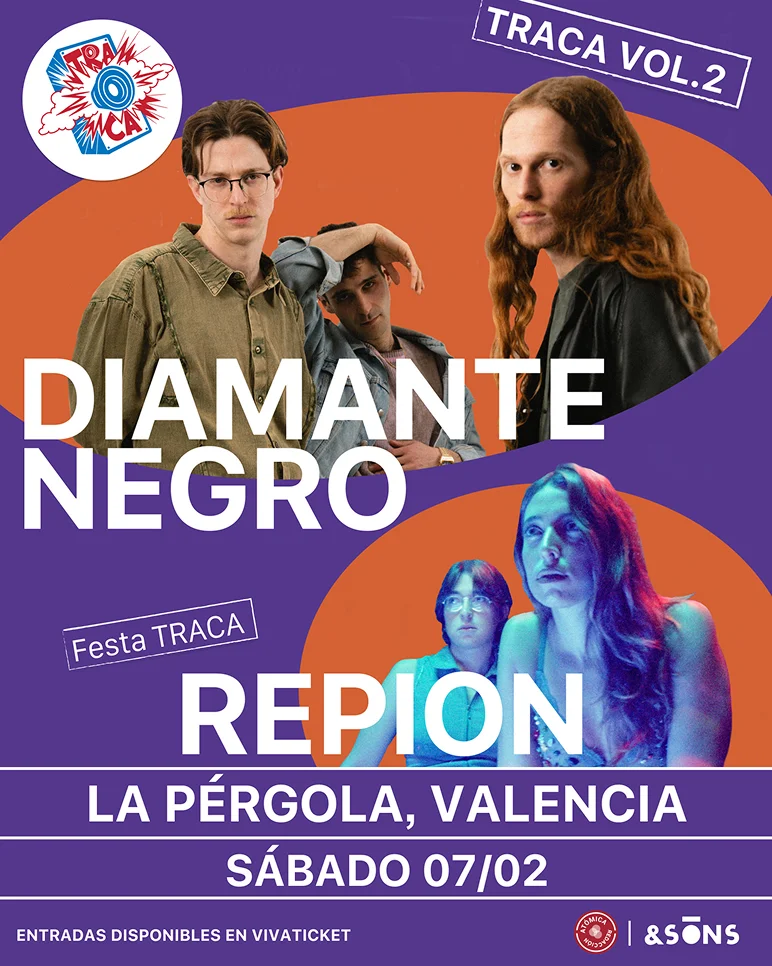
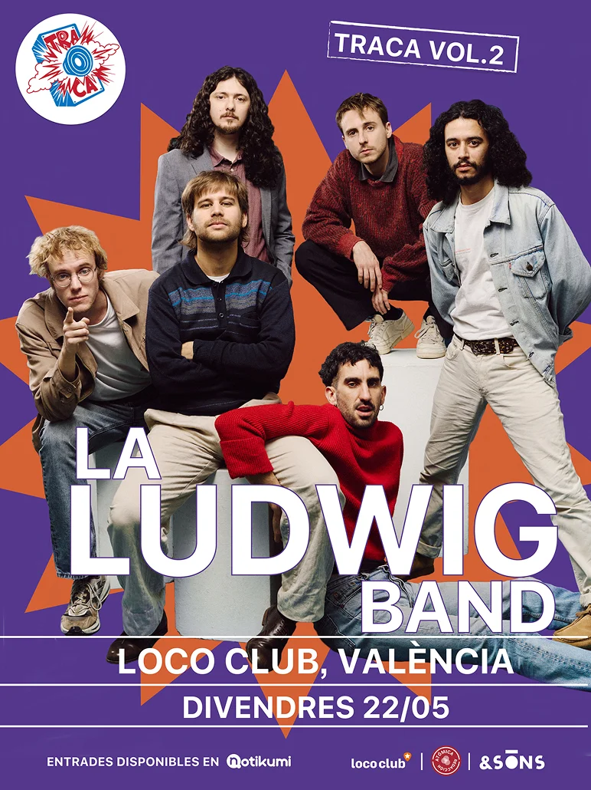
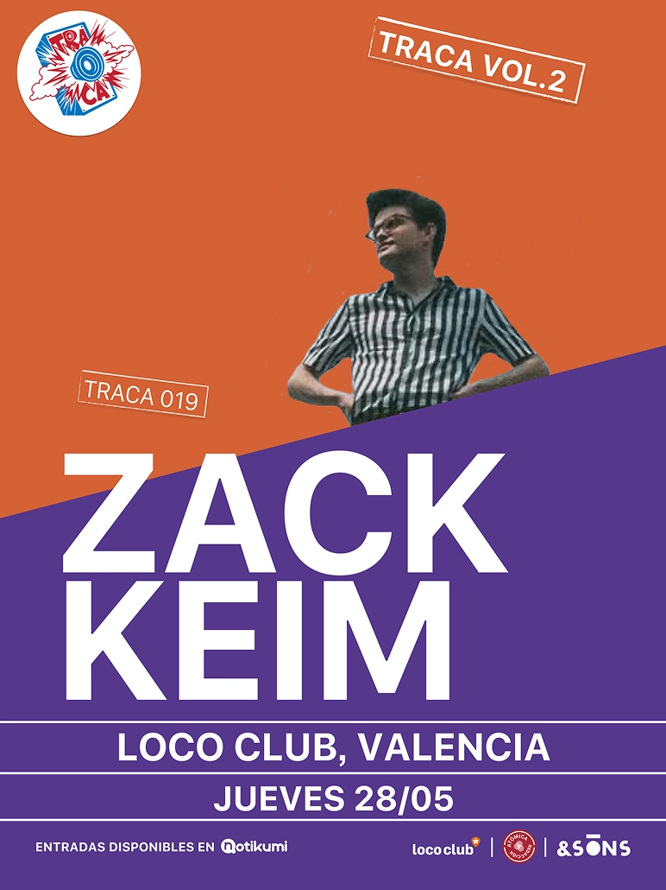

proyecto - TRACA vol.1 y vol.2
Cartelería
TRACA es un ciclo musical que se celebra en varias salas de la ciudad de valencia.
Está centrado en conciertos de grupos emergentes de la escena musical nacional.
Durante el volumen 1 y volumen 2 de Traca me encargué del diseño de los carteles.


El dibujo de los tres muñecos (el grupo está formado por tres músicos) se convierte en el elemento principal para generar las piezas gráficas y se asienta como el gráfico esencial e identificativo del grupo.





